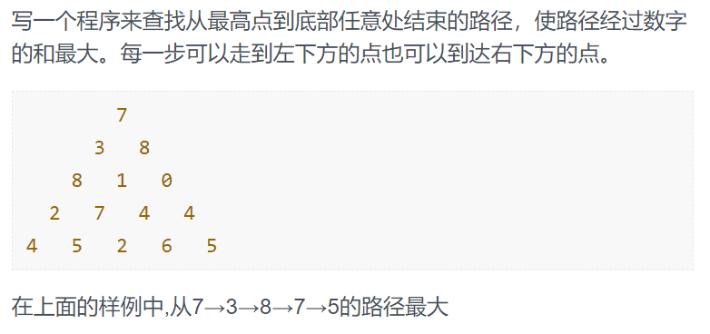
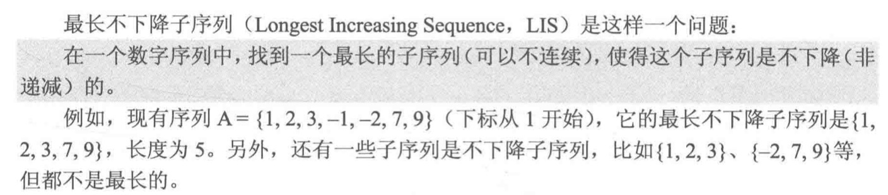

一维动态规划 重叠子问题（Overlapping Subproblems）： 一个问题可以被分解为若干个子问题，且这些子问题会重复出现。
最优子结构（Optimal Substructure）： 一个问题的最优解可以由其子问题有效的构造出来。
一个问题必须有这两个特点，才能用动态规划去解决。动态规划通过记录重叠子问题的解（递推或者记忆化搜索）来解决问题。
1.数塔问题（二维） 
解法： 用 $f[i][j]$ 存数塔中的数，$dp[i][j]$表示数塔（i，j）处数之前可取的最大路径值，可写出状态转移方程：$dp[i][j] = max(dp[i+1][j], dp[i+1][j+1]) + f[i][j]$
代码：
递归写法（含有许多重复计算）
1 2 3 4 5 6 7 8 9 10 11 12 13 14 15 16 17 18 19 20 21 22 23 24 25 26 27 28 29 30 31 32 #include <cstdio> #include <algorithm> using namespace std;const int maxn = 1001 ;int f[maxn][maxn];int max_path (int i, int j, int n) int main () int n; scanf ("%d" , &n); for (int i = 1 ; i <= n; i++) { for (int j = 1 ; j <= i; j++) { scanf ("%d" , &f[i][j]); } } printf ("%d" ,max_path (1 , 1 , n)); return 0 ; } int max_path (int i, int j, int n) if (i == n) return f[i][j]; int left, right; left = max_path (i + 1 , j, n); right = max_path (i + 1 , j + 1 , n); return (left > right) ? (left + f[i][j]) : (right + f[i][j]); }
递归写法（记忆化搜索）
1 2 3 4 5 6 7 8 9 10 11 12 13 14 15 16 17 18 19 20 21 22 23 24 25 26 27 28 29 30 31 32 33 34 #include <cstdio> #include <algorithm> using namespace std;const int maxn = 1001 ;int f[maxn][maxn], dp[maxn][maxn];int max_path (int i, int j, int n) int main () int n; scanf ("%d" , &n); for (int i = 1 ; i <= n; i++) { for (int j = 1 ; j <= i; j++) { scanf ("%d" , &f[i][j]); } } printf ("%d" ,max_path (1 , 1 , n)); return 0 ; } int max_path (int i, int j, int n) if (i == n) dp[i][j] = f[i][j]; if (dp[i][j] != 0 ) return dp[i][j]; dp[i+1 ][j] = max_path (i + 1 , j, n); dp[i+1 ][j+1 ] = max_path (i + 1 , j + 1 , n); return (dp[i + 1 ][j] > dp[i + 1 ][j + 1 ]) ? (dp[i + 1 ][j] + f[i][j]) : (dp[i + 1 ][j + 1 ] + f[i][j]); }
递推写法
1 2 3 4 5 6 7 8 9 10 11 12 13 14 15 16 17 18 19 20 21 22 23 24 25 26 27 28 29 30 31 #include <cstdio> #include <algorithm> using namespace std;const int maxn = 1001 ;int f[maxn][maxn], dp[maxn][maxn];int max_path (int i, int j, int n) int main () int n; scanf ("%d" , &n); for (int i = 1 ; i <= n; i++) { for (int j = 1 ; j <= i; j++) { scanf ("%d" , &f[i][j]); } } for (int i = 1 ; i <= n; i++) dp[n][i] = f[n][i]; for (int i = n - 1 ; i > 0 ; i--) { for (int j = 1 ; j <= i; j++) { dp[i][j] = max (dp[i + 1 ][j], dp[i + 1 ][j + 1 ]) + f[i][j]; } } printf ("%d" , dp[1 ][1 ]); return 0 ; }
2. 最大连续子序列和
解法： 令dp[i]表示以A[i]结尾的最大连续序列和，那么整个序列的最大和即为dp[1]—dp[n]中最大值.接下来可以求得dp[i]状态转移方程$dp[i] = max(A[i],A[i]+dp[i-1] )$。边界条件即dp[0] = A[0].
对于上例13来说，以它为结尾的最大序列和要么是13+以-4结尾的最大序列和，要么是13本身（加上-4部分反而会更小）。
代码：
1 2 3 4 5 6 7 8 9 10 11 12 13 14 15 16 17 18 19 20 21 22 23 24 25 #include <cstdio> #include <algorithm> using namespace std;const int maxn = 1000 ;int A[maxn], dp[maxn];int main () int n; scanf ("%d" , &n); for (int i = 1 ; i <= n; i++) { scanf ("%d" , &A[i]); } dp[1 ] = A[1 ]; for (int i = 2 ; i <= n; i++) dp[i] = max (A[i], A[i] + dp[i - 1 ]); int max = 0 ; for (int i = 1 ; i <= n; i++) if (dp[i] > max) max = dp[i]; printf ("%d" , max); return 0 ; }
3. 最长不降子序列(LIS) 
解法一:
dp[i]记录以A[i]结尾的LIS长度，则整个序列的LIS长度为dp[1]—dp[n]中最大值。其中dp[i]的取值要么为dp[j]+1(此时A[i]可以接在以A[j]结尾的LIS之后)，要么为1（此时A[i]值非常小，没有办法接在任何子链后面）。由此可写出状态转移方程：$dp[i] = max(1,dp[j]+1) (j = 1,2,…,i-1 且 A[j] <= A[i])$.其中dp[j]+1中的j表示满足A[j] <= A[i]的j.当A[i]是当前最小值时，dp[j]+1并不存在，此时dp[i]为1.此解法复杂度为$O(n^2)$.
代码：
1 2 3 4 5 6 7 8 9 10 11 12 13 14 15 16 17 18 19 20 21 22 23 24 25 26 27 28 29 #include <cstdio> #include <algorithm> using namespace std;const int maxn = 1000 ;int A[maxn], dp[maxn];int main () int n; scanf ("%d" , &n); for (int i = 1 ; i <= n; i++) scanf ("%d" , &A[i]); int ans = -1 ; for (int i = 1 ; i <= n; i++) { dp[i] = 1 ; for (int j = 1 ; j < i; j++) { if (A[j] <= A[i] && dp[j] + 1 > dp[i]) { dp[i] = dp[j] + 1 ; } } ans = max (dp[i], ans); } printf ("%d" , ans); return 0 ; }
解法二:
在解法一中，每次计算dp[i]都要将所有A[i]前面的A[j]同A[i]比较一遍，也因此占用了n的复杂度，解法二是对比较过程的优化。
设置一个数组d，其中d[i]表示长度为i的LIS最小尾元素的值，len表示d数组中元素个数。如下图所示，len的长度就是我们需要的最终结果（即6），在维护d[len]的过程中，首先遍历序列，若遇到比当前len所存的d[len]值更大的数，则放在d[++len]处（如9后面的16）；若遇到比当前len所存的d[len]小的数，则去替换前面第一个比自己大的数（如18原来在37的后面，在d数组中替换了前面的24）。
需要注意的是，d[len]所存结果并不是最终的LIS序列，但其len值是最大的LIS长度，并且每一个d[len]的值（如37）都一定是可达的（即有以它为结尾的LIS），只不过可达的路径中有的值可能被替换掉了。
在此解法中，遍历耗时n，查找替换值可采用二分查找法，耗时logn，总的复杂度为O(nlogn) .
代码：
1 2 3 4 5 6 7 8 9 10 11 12 13 14 15 16 17 18 19 20 21 22 23 24 25 26 27 #include <cstdio> #include <algorithm> using namespace std;const int maxn = 1000 ;int A[maxn], dp[maxn],d[maxn];int main () int n, len = 0 ; scanf ("%d" , &n); for (int i = 1 ; i <= n; i++) scanf ("%d" , &A[i]); d[++len] = A[1 ]; for (int i = 2 ; i <= n; i++) { if (A[i] >= d[len]) d[++len] = A[i]; else { int *j = upper_bound (d + 1 , d + len + 1 , A[i]); *j = A[i]; } } printf ("%d" , len); return 0 ; }
upper_bound(first,last,val)：STL algorithm中的函数，用于在一个升序 数组/容器中。在[first,last)中找到第一个值大于val的元素并返回其指针，first、last也是位置指针。同理还有lower_bound，它找的是第一个值大于等于val的元素，他们都采用二分查找，复杂度为O(logn)。
如果是降序容器，需要用greater()重载upper_bound。
拓1：合唱队形
解法： 此题就是求最长的山形队列，采用两个方向LIS的方法，枚举每个人站在中间时的最优解即可。使用两个dp数组存入从左到右和从右到左的以i结尾的LIS长度信息，此时dp1[i]+dp2[i]-1即是最长的山形队列长度。
代码：
1 2 3 4 5 6 7 8 9 10 11 12 13 14 15 16 17 18 19 20 21 22 23 24 25 26 27 28 29 30 31 32 33 34 35 36 37 38 39 40 41 42 43 #include <cstdio> #include <algorithm> using namespace std;const int maxn = 1000 ;int A[maxn], dp1[maxn],dp2[maxn];int main () int n; scanf ("%d" , &n); for (int i = 1 ; i <= n; i++) scanf ("%d" , &A[i]); for (int i = 1 ; i <= n; i++) { dp1[i] = 1 ; for (int j = 1 ; j < i; j++) { if (A[j] < A[i]) { dp1[i] = max (dp1[i], dp1[j] + 1 ); } } } for (int i = n; i >= 1 ; i--) { dp2[i] = 1 ; for (int j = n; j > i; j--) { if (A[j] < A[i]) { dp2[i] = max (dp2[i], dp2[j] + 1 ); } } } int ans = -1 ; for (int i = 1 ; i <= n; i++) { ans = max (ans, dp1[i] + dp2[i] - 1 ); } printf ("%d\n" , n-ans); return 0 ; }
拓2：低价购买
解法： 此题主要是要求LIS的数目，采用另一个数组f来记录LIS方案数。其中倘若 a[i] = a[j] && dp[i] = dp[j] 则意味着以i结尾的LIS和以j结尾的LIS相同，此时其中一个LIS不计入方案（两个相同取一个即可 ）；若 a[i] < a[j] && dp[i] = dp[j] + 1 则意味着以i结尾的LIS可以由以j结尾的LIS转移过来，此时的方案数等于f[j] + f[i]。（解释：如果有j1和j2，他们的LIS长度相同并且都等于dp[i]-1，意味着i可以由j1转移过来，也可以由j2转移过来 ，则到达i的方案数为j1的方案数+j2的方案数 ）边界条件：LIS长为1，此时方案数为1；其他情况方案数初始化为0.
代码：
1 2 3 4 5 6 7 8 9 10 11 12 13 14 15 16 17 18 19 20 21 22 23 24 25 26 27 28 29 30 31 32 33 34 35 36 37 38 39 40 41 42 43 #include <cstdio> #include <algorithm> using namespace std;const int maxn = 1000 ;int A[maxn], dp[maxn],f[maxn];int main () int n; scanf ("%d" , &n); for (int i = 1 ; i <= n; i++) scanf ("%d" , &A[i]); int maxx = -1 ; for (int i = 0 ; i <= n; i++) { dp[i] = 1 ; for (int j = 0 ; j < i; j++) { if (A[i] < A[j]) { dp[i] = max (dp[i], dp[j] + 1 ); } } maxx = max (maxx, dp[i]); } int ans = 0 ; for (int i = 1 ; i <= n; i++) { if (dp[i] == 1 )f[i] = 1 ; for (int j = 1 ; j < i; j++) { if (dp[i] == dp[j] && A[i] == A[j]) f[j] = 0 ; if (dp[i] == dp[j] + 1 && A[i] < A[j]) f[i] += f[j]; } if (dp[i] == maxx) ans += f[i]; } printf ("%d %d\n" , maxx, ans); return 0 ; }
二维动态规划 1.马拦过河卒
解法： 此题用二维数组dp记录每个坐标的路径条数，则$dp[n][m]$即所求。
状态转移方程：$dp[x][y] = dp[x-1][y] + dp[x][y-1]$.边界值：$dp[0][y] = 1$和$dp[x][0] = 1$.即坐标轴上的值路径均为1.需要注意的是，倘若马的控制点在坐标轴上，则该点及其后的点均不可达（路径数为0）
代码：
1 2 3 4 5 6 7 8 9 10 11 12 13 14 15 16 17 18 19 20 21 22 23 24 25 26 27 28 29 30 31 32 33 34 35 36 37 38 39 40 41 42 43 44 45 46 47 #include <cstdio> #include <algorithm> using namespace std;int horse[21 ][21 ];int stepx[8 ] = { -2 ,-2 ,-1 ,-1 ,1 ,1 ,2 ,2 };int stepy[8 ] = { -1 ,1 ,-2 ,2 ,-2 ,2 ,-1 ,1 };int dp[21 ][21 ];int main () int m, n, X, Y; scanf ("%d%d%d%d" , &n, &m, &X, &Y); horse[X][Y] = true ; for (int i = 0 ; i < 8 ; i++) { int x = X + stepx[i]; int y = Y + stepy[i]; if (x >= 0 && x <= n && y >= 0 && y <= m) horse[x][y] = true ; } for (int i = 0 ; i <= m; i++) { if (!horse[0 ][i]) dp[0 ][i] = 1 ; else break ; } for (int i = 0 ; i <= n; i++) { if (!horse[i][0 ]) dp[i][0 ] = 1 ; else break ; } for (int i = 1 ; i <= n; i++) { for (int j = 1 ; j <= m; j++) { if (!horse[i][j]) dp[i][j] = dp[i - 1 ][j] + dp[i][j - 1 ]; } } printf ("%d\n" , dp[n][m]); return 0 ; }
2.最长回文串
解法： 以$dp[i][j]$表示A[i]到A[j]的子串是不是回文串，若是则置其值为1，不是则置为0.那么求$dp[i][j]$的值有两种情形：1.A[i] != A[j]则$dp[i][j]$必为0。2.A[i] == A[j]则$dp[i][j]$是否是回文串取决于$dp[i+1][j-1]$是否是回文串。
状态转移方程如下 ：lr }边界条件为 ：1.长度为1的子串dp值均为1（都是回文串）2.长度为2的子串根据两个字母值是否相等来确定dp的值。即为：$dp[i][i] = 1 ,dp[i][i+1] = (A[i] == A[i+1]) ? 1 : 0$
以下分析如何求dp数组：倘若按照i，j按顺序遍历来求解，例如固定i=1，j从1开始遍历，当开始计算$dp[1][3]$时，我们需要$dp[2][2]$的值，而此时i=1，$dp[2][2]$的值还未知。事实上，以任何顺序遍历求解都无法保证完成。所以我们按照长度和子串首位遍历 求解，从长度为3的子串开始，枚举子串的起始位置（i处）。
此算法复杂度为$O(n^2)$
代码：
1 2 3 4 5 6 7 8 9 10 11 12 13 14 15 16 17 18 19 20 21 22 23 24 25 26 27 28 29 30 31 32 33 34 35 36 37 38 39 #include <cstdio> #include <cstring> const int maxn = 1010 ;char A[maxn];int dp[maxn][maxn];int main () gets (A); int len = strlen (A),ans = 1 ; memset (dp,0 ,sizeof for (int i = 1 ; i <= len; i++) { dp[i][i] = 1 ; if (i < len) { if (A[i] == A[i+1 ]) { dp[i][i+1 ] = 1 ; ans = 2 ; } } } for (int l = 3 ; l <= len; l++) { for (int i = 1 ; i + l - 1 < len; i++) { int j = i + l - 1 ; if (A[i] == A[j] && dp[i+1 ][j-1 ] == 1 ) { dp[i][j] = 1 ; ans = l; } } } printf ("%d\n" ,ans); return 0 ; }
3.背包问题 01背包
解法： 此题采用动态规划方法，将n件物品编号，拿到第i件物品时最大的总价值dp[i]取决于拿第i-1件物品时的最大总价值。当拿到第i件物品时背包容量不够，则dp[i] = dp[i-1]；当拿到第i件物品时背包容量足够容纳该物品，则可以选择拿dp[i] = dp[i-1]+c[i]或者不拿dp[i] = dp[i-1]。我们除了记录i之外，还需要一维来记录数组容量，倘若只有i物品的选取与否来决定最大价值显然会变成贪心算法，而贪心算法无法求出最优解。当我们可以选取物品i时（v>w[i]），就去考虑小背包的最大价值。最后遍历第n件物品的v（0~V），最大值即所求。（并没有要求背包装满）
状态转移方程如下 :$dp[i][v] = max(dp[i-1][v],dp[i-1][v-w[i]] + c[i]) (1 \leq i \leq n , w[i] \leq v \leq V)$
边界条件 ：$dp[0][v] = 0 (0 \leq v \leq V)$ 即前0件物品放入任何容量的背包中都只能获得价值0.
此解法复杂度为$O(nV)$.
空间优化： 如下图，我们可以看出，在动态转移过程中，对每个i的求解都只需要i-1的状态值（即上一行），若用整个二维数组记录所有的值显得有些浪费。实际上我们可以只用一个一维数组，仅保留求解时需要的值，求解完毕则可以丢弃（留给其他的用）该块空间，称为滚动数组 。
假设i=1，则图中第一行的值全为0，第二行的值根据第一行来确定，如图所示。在优化的解法中，我们仅有一行来保存数据，在初始化时将它设置为全零。我们计算第i行的数据时（即图中第二行），在对每一个v的计算中，需要参考当前块的值和v-w[i]块的值，而在更新数组之前这两块的值都是上一次的，即i-1行的，正是我们所需要的；在更新之后当前的块则是第i行的了，供给i+1行使用。
根据上面的描述我们不难发现，必须从后往前更新数组才可以。因为倘若从前往后更新，则数组左边是已经更新（第i行）的数据，右边是更新前（第i-1行）的数据，而在往右更新时，我们需要左边上一行的数据来比较大小，此时左边上一行的数据已经被覆盖掉了。
优化后的状态转移方程 ：$dp[v] = max(dp[v], dp[v - w[i]] + c[i]) (1 \leq i \leq n, w[i] \leq v \leq V)$
代码：
1 2 3 4 5 6 7 8 9 10 11 12 13 14 15 16 17 18 19 20 21 22 23 24 25 26 27 28 29 30 31 32 33 34 35 36 37 38 39 40 #include <cstdio> #include <algorithm> using namespace std;const int maxn = 100 ;const int maxv = 1000 ;int w[maxn],c[maxn],dp[maxv];int main () int n,V; scanf ("%d%d" , &n, &V); for (int i = 1 ; i <= n; i++) { scanf ("%d" , &w[i]); } for (int i = 1 ; i <= n; i++) { scanf ("%d" , &c[i]); } for (int v = 0 ; v <= V; v++) { dp[v] = 0 ; } for (int i = 1 ; i <= n; i++) { for (int v = V; v >= w[i]; v--) { dp[v] = max (dp[v], dp[v-w[i]] + c[i]); } } int ans = -1 ; for (int v = 0 ; v <= V; v++) { ans = max (ans, dp[v]); } printf ("%d" , ans); return 0 ; }